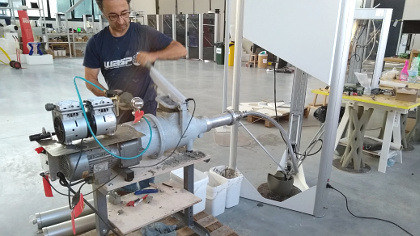

Currently I am working on a project for the First Energy Beta Lab. First Energy is one of the nations largest power providers.
Due to an NDA being in place on this project, I have to be vauge in detail and cannot show photos of the actual project itself.
Essentially I am helping them figure out how to print custom molds for them to be able to create specialized safety equiptment for employees with disabilities.
They currently out source for this service and this causes employees to be unable to work until that equiptment is created.
The Machine
First Energy a few years back purcheased us a Delta WASP 40100 LDM Clay 3D printer.
Due to multiple issues with the way WASP designed their machine I have fully gone through it and made many improvements.
The greatest improvement made to the machine is I converted it to use fresh mixed clay directly extruded from a clay mixer.
This is much better than the origional WASP design which included a air chamber that forced the clay out causing a sponge effect and water loss from the clay

Image aquired from a split second of a video where WASP leaked this direct feeding solutionMy extrusion system modeled based on the above photo